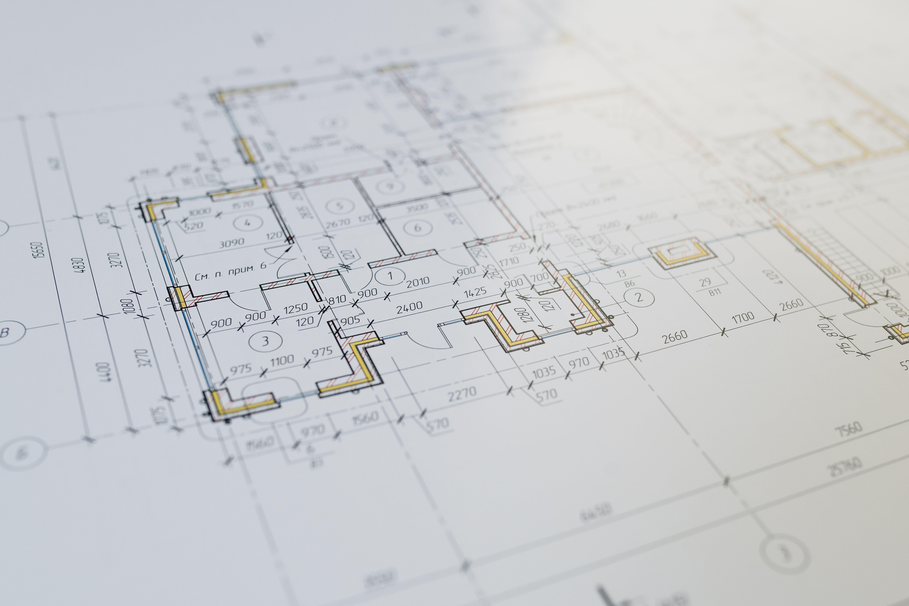
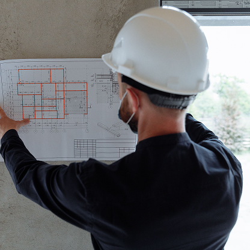
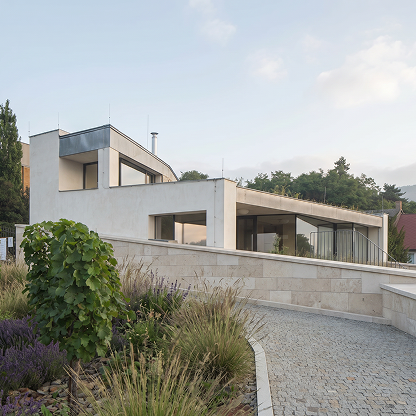
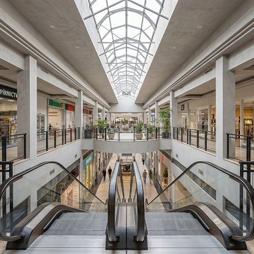

Příprava a plánování
Prověříme zadání, navrhneme postup realizace a připravíme harmonogram i rozpočet ještě před zahájením stavby.

Služby pro kompletní realizaci pozemních staveb
Zajišťujeme generální dodávku, pozemní stavby i rekonstrukce. Koordinujeme profese, hlídáme rozpočet a vedeme realizaci od přípravy až po předání.
Od první přípravy až po předání stavby řešíme vše pod jednou střechou. Postaráme se o koordinaci profesí, termíny, rozpočet i kvalitu provedení.
Prověříme zadání, navrhneme postup realizace a připravíme harmonogram i rozpočet ještě před zahájením stavby.
Celou stavbu zastřešuje jedna smlouva a jeden odpovědný tým — od výběru subdodavatelů po předání.
Realizujeme novostavby rezidenčních, komerčních i provozních objektů včetně technických zařízení budov.
Převezmeme odpovědnost za celou realizaci vaší stavby. Uzavíráte jednu smlouvu s jedním partnerem — výběr subdodavatelů, koordinaci profesí, harmonogram i rozpočet řešíme my.
Rozsah prací:


Stavíme novostavby rezidenčních, komerčních i provozních objektů. Od zemních prací a hrubé stavby přes technická zařízení budov až po finální dokončení a předání klíčů.
Rozsah prací:
Modernizujeme a přestavujeme stávající objekty. Před zahájením prací posoudíme technický stav, navrhneme postup podle vašich priorit a realizaci přizpůsobíme provozu objektu.
Rozsah prací:
